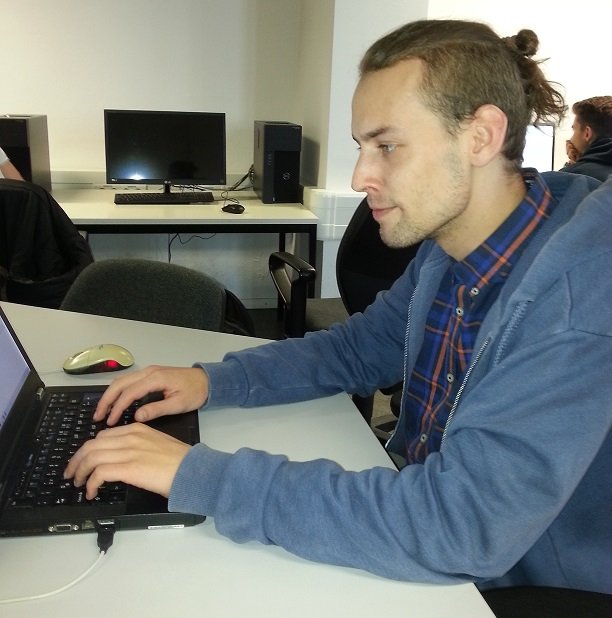
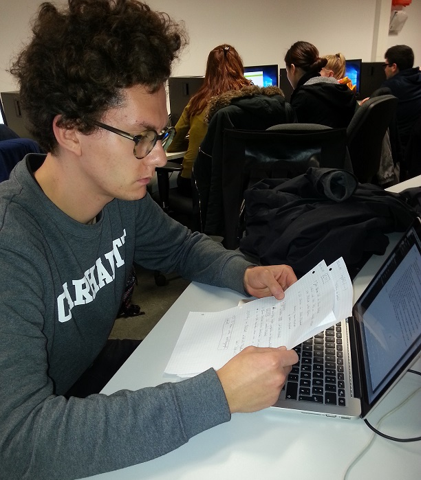

Jakob Lagaly
Jakob is 26 years old and has been studying media and computing for the last 3 years. He changed from Beuth University to HTW Berlin last semester. He was born in Heidelberg and for the most part grew up there. He likes Video-Games, Movies and Mangas.
Adrian Podlesny
Adrian is 24 years old and studies International Media and Computer Science in the first semester. He’s born in Wiesbaden, grew up in Rostock and came to Berlin in 2012. He likes videogames, Star Wars and coffee.
Aaron Winter
Aaron is 24 years old and as Adrian, he is studying International Media and Computer Science in the first semester. Born and raised in Berlin, he is a real city child. Besides of programming and computer games, prespectively games in general, he loves playing guitar and is doing martial arts in his leisure time